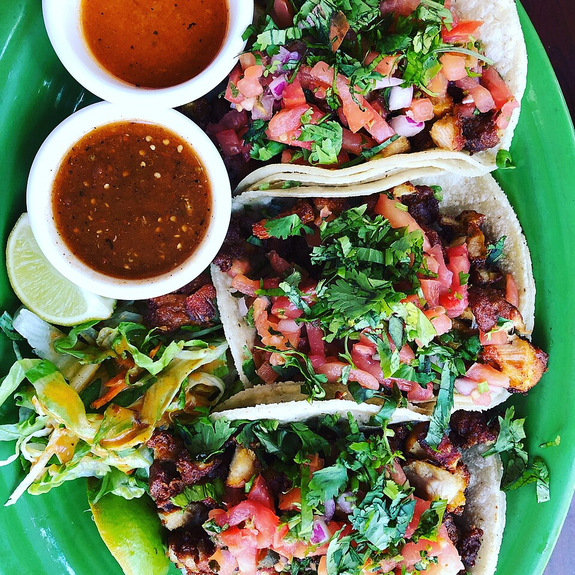

The Double Tortilla
We always serve our tacos on double corn tortillas warmed on the plancha, ensuring the taco can be picked up and eaten cleanly to the very last savory bite without tearing.
The true Mexican street taco is an exercise in culinary balance: warm, fragrant corn tortillas with structural integrity, juicy deeply-seasoned fillings, crisp aromatics of cilantro and white onion, an essential squeeze of tart lime, and the fiery complexity of fresh-pounded roasted salsas.

Every taco at Taqueria Los Altos is built according to timeless standards.
We always serve our tacos on double corn tortillas warmed on the plancha, ensuring the taco can be picked up and eaten cleanly to the very last savory bite without tearing.
No cheese or lettuce on traditional street tacos. The crisp pungency of diced raw white onion and earthy freshness of chopped cilantro cut cleanly through rich braised meats.
We roast our tomatillos and dried chiles de árbol over open fire before grinding, creating deeply complex salsas ranging from bright and tangy to smoky and fiercely piquant.